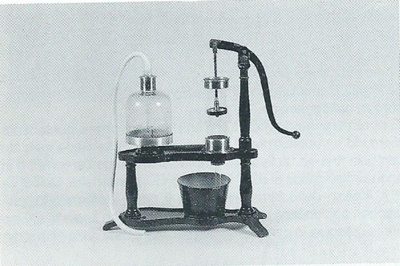

Pompa premente e aspirante
Scuola di provenienza: Istituto agrario "F. De Sanctis", Avellino
Settore: Meccanica
Costruttori: Sconosciuto
Materiali: Ferro, ottone e vetro
Accessori: Nessuno
Stato di conservazione: Buono, valvola cieca intasata
Descrizione: La pompa premente e aspirante non ha valvole e il cilindro è immerso in parte nel serbatoio, in modo che quando si solleva lo stantuffo si crea una rarefazione che tira su l´acqua.